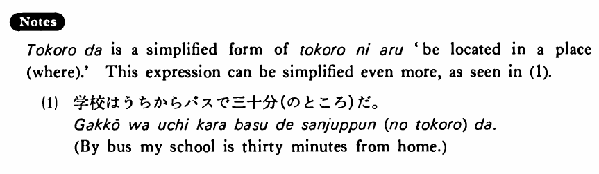

ところだ (1) (B. 495)
- (ks).
- 私のうちは駅から歩いて十分のところだ・です。
- My house is in a place where it takes ten minutes to get to from the station on foot. / On foot my house is ten minutes from the station.
- (a).
- 学校はうちからバスで三十分のところです。
- My school is in a place where it takes thirty minutes to get to from home by bus. / By bus it takes thirty minutes to get from home to school.
- (b).
- その病院はここから車で十五分のところだ。
- The hospital is in a place where it takes fifteen minutes to get to from here by car. / By car the hospital is fifteen minutes from here.
